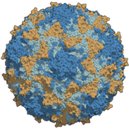
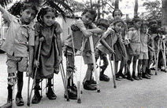

Medical service available 7 days with home Rx delivery
Polio, short for poliomyelitis, is a dangerous and potentially life-threatening disease that occurs as a result of contracting poliovirus. The virus is highly contagious, meaning it can easily spread from one person to another through contact, and it lives in an infected person’s throat and intestines. Unlike some viruses that have instigated pandemics, the poliovirus is not zoonotic, instead only affecting humans.
Polio epidemics first began appearing in the 19th century, although the first documented outbreak in the US occurred in 1894. At the time, scientists and physicians did not know about the contagious nature of the poliovirus, and they did not discover that it could spread from person to person until 1905. Throughout the 20th century, there were multiple polio outbreaks in the US as well as worldwide. In the 1950s, vaccines were starting to be developed and tested for efficacy against polio, and since then, two different vaccine types have been discovered. Today, polio has been eradicated in many different parts of the world.
Some who are infected with polio may experience more severe symptoms affecting the brain and spinal cord, such as paresthesia (burning or prickling sensation in limb extremities), meningitis (inflammation of the brain and/or spinal cord’s protective membranes), and paralysis (loss of movement in parts of the body). Paralysis is the most serious symptom of polio, because it can lead to permanent disability and in extreme cases, death. The mortality rate amongst those who develop paralysis as a byproduct of polio is incredibly high, because poliovirus often affects muscles and tissues that allow humans to breathe. Even fully-recovered children are at risk of developing muscle pain, muscle weakness, or paralysis several years after having polio in a condition called post-polio syndrome. The majority of people who have the poliovirus in their system, approximately 72% of all infected individuals, will not show any symptoms of polio. It is estimated that every 1 in 4 people will exhibit an onset of flu-like symptoms upon infection, such as: sore throat, fever, tiredness, nausea, headache, and stomach pain. Symptoms typically last for 2 to 5 days, then fade away of their own accord.
Poliovirus enters the body through openings such as the mouth. It can be contracted when exposed to droplets of saliva from a sneeze or cough of an infected person, or by contact with the feces of an infected person. If you have feces on your hands and touch your mouth, you can become infected with polio. Similarly, if you put objects in your mouth that have been contaminated with the virus-containing feces, you can contract polio. Polio is especially dangerous to those who do not have access to sanitary environments, because the poliovirus can exist in the feces of an infected person for many weeks, and that feces is easily able to contaminate objects in unsanitary conditions, thereby putting those individuals living there at higher risk of contracting the virus. Someone who is infected with the virus is able to transmit it to others around them immediately before and up to 2 weeks after symptoms begin to appear. Those for whom symptoms don’t present are still able to transmit the virus to uninfected individuals.
In terms of preventing and treating polio, there are two main types of vaccines that help prevent the development of disease symptoms. These include “inactivated poliovirus vaccine”, or IPV for short, or “oral poliovirus vaccine”, abbreviated as OPV. IPV is administered as an injection in the leg or arm, depending on the receiver’s age, and is the main vaccine used in the US to treat polio. OPV is administered through the mouth, and is commonly used in other countries around the world. Both vaccines prepare antibody-production against poliovirus in children who receive some form of vaccine. It is speculated that almost all (99 out of every 100 children) who are fully vaccinated against polio will be protected against its symptoms. As such, it is important for children to receive these vaccinations and to live a healthy life.
 
Would you like to advertise your companies products on our website? Then go to this form https://www.enviremadstar.com/~/Opatient/index and fill out all the things to put your advertizement on our website!!
Medical service available 7 days with home Rx delivery
center for spinal rehabilitation
Their Website: https://spauldingrehab.org/conditions-services/polio
Government-funded rehabilitation services
Their Website: https://dhs.lacounty.gov/rancho/patient-programs-and-services/polio-clinic/